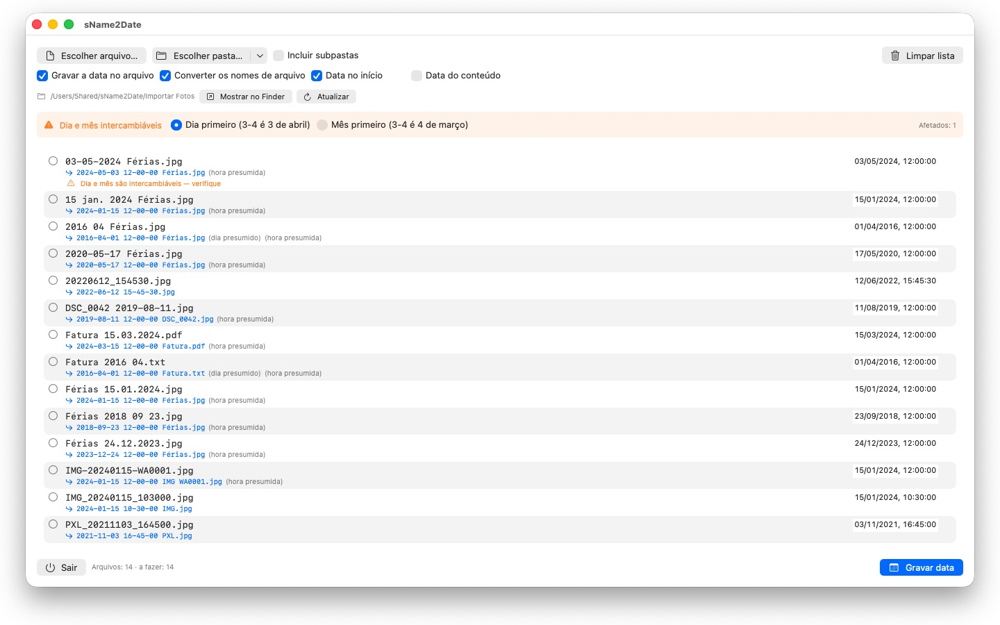
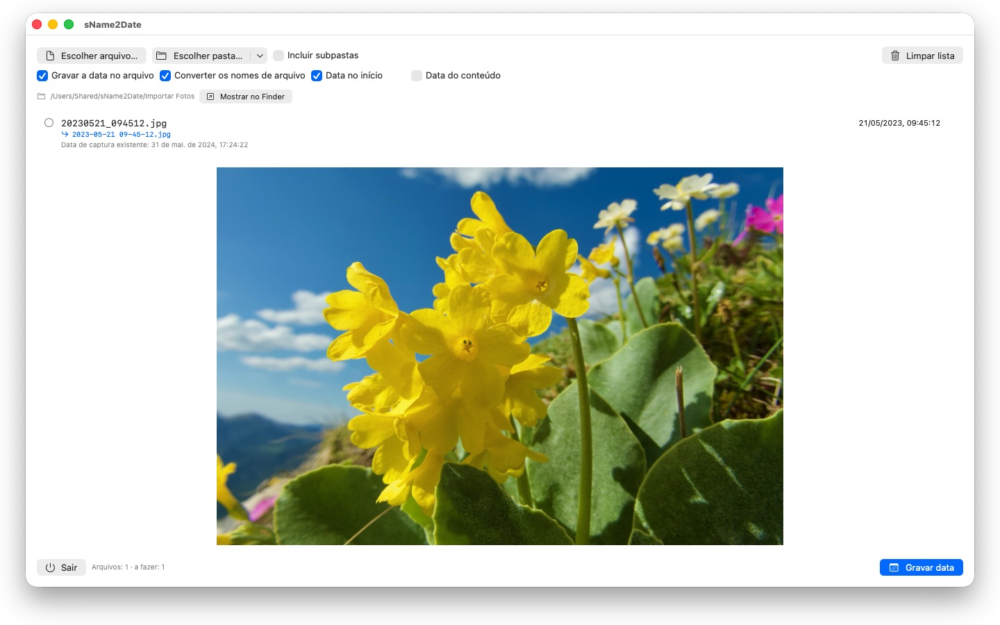

Fotos sem data de captura não se encaixam em lugar nenhum. O sName2Date tira a data do nome do arquivo e a grava onde todo gerenciador de fotos a procura.


Muitas fotos e filmes trazem a data no nome do arquivo — mas não onde os programas a procuram. Quem recebe imagens de uma conversa, de um scanner ou de um arquivo antigo fica com arquivos como IMG_20240115_103000.jpg ou Férias 15.01.2024.jpg, que aparecem em qualquer gerenciador de fotos com a data de hoje.
O sName2Date lê a data do nome do arquivo e a grava como data de captura dentro do arquivo. Se ainda não houver nenhuma, ela é criada.
GRAFIAS RECONHECIDAS
Data e hora nas formas usuais, entre outras:
- 2024-01-15 10-30-00
- IMG_20240115_103000
- IMG-20240115-WA0001
- 2024-01-15 · 2024 01 15 · 2024_01_15
- 15.01.2024 · 15-01-2024 · 15.01.24
- 15 jan. 2024 · 15 março 2024 · January 15 2024
- 2016 04 · 04-2016 — apenas ano e mês
Nomes de mês por extenso são lidos no idioma do seu sistema e em inglês, tanto na forma longa quanto na abreviada.
Se o nome trouxer apenas a data, um horário é presumido; qual deles, você decide. Faltando também o dia, vale o primeiro do mês — e a linha informa isso. Havendo várias datas no nome, vence a primeira. E onde dia e mês seriam intercambiáveis, decide a sua configuração — os arquivos afetados são marcados, em vez de adivinhados em silêncio.
Se o nome não trouxer data alguma, você mesmo a informa à direita, na própria linha. Isso alcança até 1826, o ano da fotografia mais antiga preservada — imagens digitalizadas do século XIX podem, portanto, ser datadas como as de ontem.
O QUE É ALTERADO
São gravados EXIF DateTimeOriginal e DateTimeDigitized, além de TIFF DateTime; em filmes e gravações de áudio, a data de criação dentro do contêiner. Se você quiser, também a data de criação e de modificação do próprio arquivo.
Os dados de imagem permanecem intocados: um JPEG não é comprimido novamente, um filme não é recodificado. Em filmes e gravações de áudio, o aplicativo em geral altera apenas alguns bytes no contêiner, em vez de reescrevê-lo — assim, mesmo um filme grande fica pronto num instante.
Uma data de captura é aceita por JPEG, PNG, TIFF, HEIC e GIF, além dos formatos de filme MP4, MOV e M4V e dos formatos de áudio M4A e M4B.
TAMBÉM ARQUIVOS QUE NÃO PODEM TER DATA DE CAPTURA
Um PDF, um arquivo de texto, uma planilha não têm campo algum para uma data de captura — e mesmo assim entram na lista. O sName2Date define neles a data de criação e de modificação do arquivo, o único lugar a que a informação pode chegar; a linha mostra isso com um sinal de verificação laranja em vez de um verde. Aqui nenhuma extensão importa: PDF, texto, planilhas, arquivos compactados, tudo.
Se o arquivo não deve ser tocado, você tira no alto da janela a opção Gravar a data no arquivo. Então o sName2Date apenas coloca o nome na grafia ISO: Fatura 15.03.2024.pdf vira 2024-03-15 12-00-00 Fatura.pdf, e no Finder a pasta passa a ser ordenada por data. Se você preferir, a data continua onde estava no nome, em vez de ir para o início.
TUDO PODE SER DESFEITO
Uma execução inteira se desfaz com Cmd+Z — data de captura, marcas de tempo do arquivo e o nome alterado. Cmd+Shift+Z refaz.
PASTAS INTEIRAS
sName2Date processa árvores de pastas inteiras de uma vez e pode pular arquivos que já tenham data de captura. Pastas liberadas uma vez ficam guardadas, e ela nunca mais pergunta por elas.
sName2Date Lite · Grátis — A edição para um arquivo por vez: gravar a data do nome do arquivo como data de captura em uma foto, um vídeo ou uma gravação de áudio, defini-la manualmente, passar o nome para a notação ISO e desfazer tudo com ⌘Z – os mesmos recursos do sName2Date, só que sem pastas inteiras.
- Requer macOS 12 ou posterior
- 25 idiomas
- Suporte: SwiftAppsBavaria@gmx.net
Mais Apps
SwiftRename
Renomear arquivos em lote – pela data da câmera, com numeração sequencial ou já organizados em pastas de ano e mês.
sVectorLift
Abrir, ver e salvar clipart vetorial antigo como SVG – CorelDRAW, Windows Metafile e CGM.
sCollect
Organize música, filmes, audiolivros, e-books e outras coleções em uma biblioteca. Nos formatos comuns, cada informação é gravada na tag do próprio arquivo, e não apenas no banco de dados – com suporte completo a ID3v2.4. Os MP3 podem ser exportados como cópia para o iTunes e o app Música sem que vários artistas sejam cortados; a biblioteca inteira é exportada como XML do iTunes. Reproduz quase todos os formatos, diretamente ou por meio de um player externo.
sCollectPlay
O player da biblioteca: reproduza música, filmes, audiolivros e podcasts diretamente de uma pasta, de um XML do iTunes ou de uma biblioteca do sCollect – sem alterar nada nas tags dos arquivos. Com playlists, faixas de áudio e de legendas e, nos filmes, câmera lenta e avanço quadro a quadro. O que o macOS não reproduz sozinho, como MKV, AVI ou DSD, é enviado para um player externo.
sCollectPlay Lite
A edição enxuta do sCollectPlay: basta abrir uma pasta, um XML do iTunes ou uma biblioteca do sCollect e reproduzir música, filmes, audiolivros e podcasts – com playlists, faixas de áudio e de legendas, câmera lenta e avanço quadro a quadro. Uma fonte por sessão; o navegador de colunas, as playlists próprias e as fontes usadas recentemente ficam reservados à versão completa.
sBikeBridge
Analise seus passeios de bicicleta sem enviá-los para um portal: importe arquivos FIT de qualquer ciclocomputador que grave nesse formato, além de GPX e TCX. Os passeios ficam em uma biblioteca própria no Mac – com mapa, potência e frequência cardíaca, fotos e notas; a importação detecta duplicatas. Indicadores por ano ou mês e filtros por distância, ganho de elevação e duração tornam os passeios comparáveis. Se você quiser, o mapa também fica disponível offline.